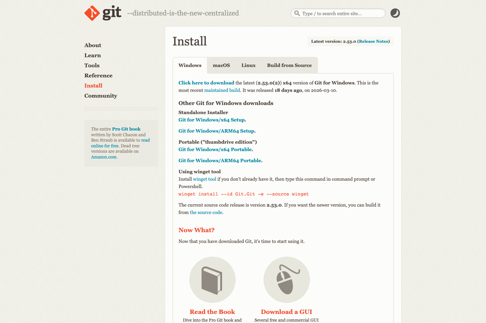

방법 1
공식 설치 파일 사용
- Git for Windows 공식 페이지 열기
- 최신 Windows x64 설치 파일 다운로드. ARM PC면 ARM64 선택
- 설치 파일 실행
- 특별한 이유 없으면 기본 옵션 유지
- 설치 후 새 터미널 열기

Tool Guide
Git 설치 필수. 변경 이력 남기기, GitHub 올리기, 제출까지 연결되는 기본 도구. Windows 기준 가장 쉬운 방법은 공식 설치 프로그램 사용
방법 1

방법 2
winget install --id Git.Git -e --source winget공식 페이지 안내 명령
설치 중 체크
Git Bash, Git GUI, PATH 설정, 대부분 기본값 유지로 충분
설치 후 확인
git --version
git config --global user.name "본인 이름"
git config --global user.email "본인 GitHub 이메일"이름과 이메일, 이후 커밋 기록에 표시
설치 확인
git --version버전 문자열 출력, 설치 완료
첫 설정
git config --global user.name "본인 이름"
git config --global user.email "본인 GitHub 이메일"GitHub 가입 이메일과 맞추면 관리 편함
자주 막히는 경우
git 명령을 못 찾으면 재부팅 또는 Git Bash로 먼저 확인공식 링크